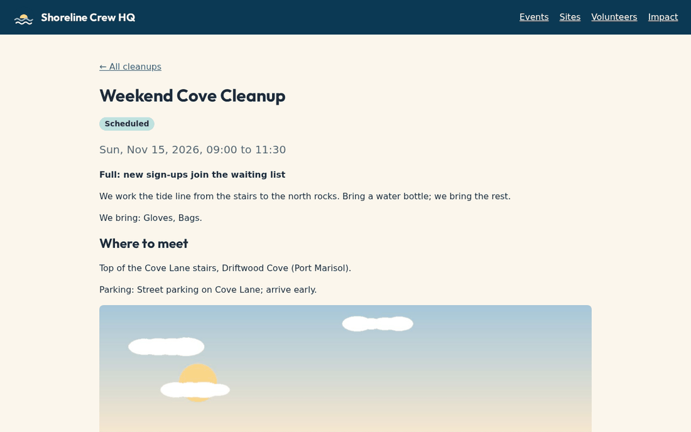

React + TypeScript · Part 2 · Session 12 of 26 · 3 hours
Session 12
Suspense and Error Boundaries, and useReducer
One place for the waiting, one for the failing; and state that follows rules.
Today
Three hours, two lessons
| 0:00 | Warm-up: three questions on 4.2 and 4.3 |
| 0:10 | 4.4 Suspense and boundaries: model, demo, lab, project |
| 1:25 | Break (10 min) |
| 1:35 | 5.1 useReducer: model, demo, lab, project |
| 2:50 | Exit ticket, homework, Checkpoint 2 next time |
LABS Lab files are in
labs/module-12. Work in starter/, never the solution.Warm-up · 6 minutes
Three questions
- useApi(key, load): what does the key decide?
- A button removes a dialog: where does the focus go?
- useApi pages and today's page: what is the same, what is new?
WHY Fingers up for A to D.
4.4
Suspense, use() and Error Boundaries
One place handles the waiting; one announcement handles the failure.
4.4 · Mental model
The sign-in table
- Suspense: one table where everyone waits
- Error boundary: one announcement when the tide is too high
- Components: only the happy path
- Outside the boundary: still on the screen
RULE The hard part of use() is where the promise comes from: a cache.
4.4 · Live demo
use() inside Suspense
// Started once, when this file is first imported: every render gets the same promise const sitesPromise = getSites() function SiteCount() { const sites = use(sitesPromise) // Site[]: the promise's value, once it has arrived return <p>The crew looks after {sites.length} beach sites.</p> } export function SiteCountDemo() { return ( <Suspense fallback={<p>Counting the beach sites…</p>}> <SiteCount /> </Suspense> ) }
4.4 · Live demo
A new promise every render
npx tsc -b && npm run lint
Found 0 warnings and 0 errors. Finished in …ms on 39 files with 150 rules using … threads.
WATCH Both quiet. The page loads forever; over a thousand requests in three seconds.
4.4 · Common mistake
use() in try/catch
npm run lint
⚠ react(error-boundaries): Avoid constructing JSX within try/catch × react-hooks(rules-of-hooks): React Hook "use" cannot be called in a try/catch block. Found 1 warning and 1 error.
WATCH use() suspends by throwing: the catch would catch the waiting.
4.4 · Error boundaries
What a boundary catches
| yes | A component inside throws while rendering |
| yes | use() reads a rejected promise |
| no | An onClick handler, a setTimeout, a .then |
| no | The boundary itself (the next one up does) |
WHY No Hook for it yet: a class component.
4.4 · The class
ErrorBoundary
shoreline-hq/src/components/ErrorBoundary.tsx
type ErrorBoundaryState = { failed: false } | { failed: true; error: unknown } // React has no Hook for catching errors yet, so an error boundary is a class component. export class ErrorBoundary extends Component<ErrorBoundaryProps, ErrorBoundaryState> { state: ErrorBoundaryState = { failed: false } // React calls this when a child throws while rendering; the result becomes the new state static getDerivedStateFromError(error: unknown): ErrorBoundaryState { return { failed: true, error }
WATCH Without static: tsc and lint quiet, nothing caught.
4.4 · Live demo
The field needs its type
npx tsc -b
src/components/ErrorBoundary.tsx:21:3 - error TS2416: Property 'state' in type 'ErrorBoundary' is not assignable to the same property in base type 'Component<ErrorBoundaryProps, ErrorBoundaryState, any>'.
Type '{ failed: boolean; }' is not assignable to type 'Readonly<ErrorBoundaryState>'.
Property 'error' is missing in type '{ failed: boolean; }' but required in type 'Readonly<{ failed: true; error: unknown; }>'.
WHY state: ErrorBoundaryState = { failed: false }
4.4 · Guided lab · 20 minutes
A site panel
labs/module-12/l4_4-suspense-use-and-error-boundaries/starter- Task 1: one promise per site
- Task 3: the boundary class · Task 2: the panel and its fallback
- Done:
Tests 6 passed (6)
4.4 · Project
A page for every cleanup

4.4 · Project · Step 6 (at home)
The fallback, with the API stopped

10
Break
Back at 1:35. Then: useReducer.
5.1
useReducer with Discriminated Unions
Say what happened; one function decides.
5.1 · Mental model
The clipboard and the rule card
- "Diego is here": the action
- Saying it: dispatch
- The rule card: the reducer
- The clipboard: the state
RULES Pure · copy, never change · no side effects · same state when nothing changed
5.1 · Live demo
Wrong actions do not compile
npx tsc -b
src/Scratch.tsx:27:53 - error TS2345: Argument of type '{ type: "added"; }' is not assignable to parameter of type 'TallyAction'.
src/Scratch.tsx:30:55 - error TS2322: Type '"clear"' is not assignable to type '"added" | "reset"'.
Found 2 errors in the same file, starting at: src/Scratch.tsx:27
WHY One names the missing field; one lists the types that exist.
5.1 · Version note
useReducer<S, A> is gone
src/Scratch.tsx:5:44 - error TS2344: Type 'RosterAction' does not satisfy the constraint 'AnyActionArg'. Found 1 error in src/Scratch.tsx:5
WHY Annotate the reducer; infer the rest.
5.1 · never
The return type, or assertNever
src/Scratch.tsx:13:59 - error TS2366: Function lacks ending return statement and return type does not include 'undefined'. Found 1 error in src/Scratch.tsx:13
src/Scratch.tsx:21:26 - error TS2345: Argument of type '{ type: "removed"; weightKg: number; }' is not assignable to parameter of type 'never'.
Found 1 error in src/Scratch.tsx:21
WHY Left: points at the return type. Right: names the missing action.
5.1 · Common mistake
State changed in place
npx tsc -b
src/reducers/rosterReducer.ts:53:19 - error TS2339: Property 'set' does not exist on type 'ReadonlyMap<string, Mark>'. Found 1 error in src/reducers/rosterReducer.ts:53
WATCH With a plain Map: compiles, and nothing changes on screen.
5.1 · The reducer in Node
No component, no browser
node scratch-roster.ts
Map(2) { 's088' => 'attended', 's091' => 'no-show' }
Map(1) { 's088' => 'attended' }
history: 1
first state untouched: true
WHY What Lesson 9.1 turns into tests.
5.1 · Guided lab · 20 minutes
A debris tally
labs/module-12/l5_1-usereducer-with-discriminated-unions/starter- Task 1: a pure reducer (same state when nothing changes)
- Task 2: assertNever finds the missing case
- Done:
Tests 4 passed (4)
5.1 · Project · Step 1
SpotsLine's promised check
src/components/SpotsLine.tsx:23:26 - error TS2345: Argument of type '{ kind: "few"; spotsLeft: number; }' is not assignable to parameter of type 'never'.
Found 1 error in src/components/SpotsLine.tsx:23
WHY In Lesson 3.3 this compiled and the card lost its spots line.
5.1 · Project
The check-in desk

Wrap-up · 4 minutes
Exit ticket
- Suspense boundary vs error boundary: what does each handle?
- Why the same promise on every render?
- What does assertNever give you?
WHY No notes.
Before Session 13
Homework and Checkpoint 2
- 4.4: Steps 5 and 6, exercises, quiz, journal
- 5.1: Steps 4 to 6, exercises, quiz, journal
- Review Lessons 4.1 to 5.1: Checkpoint 2 opens Session 13
- Bring: Lesson 5.1 finished (or
lesson-18-start)
NEXT Session 13: Typed Context.